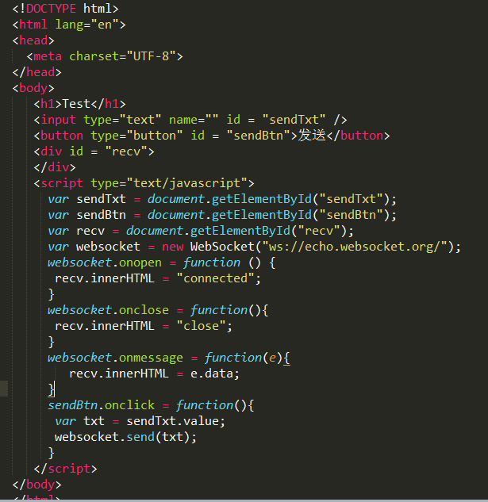
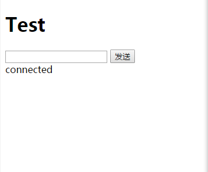
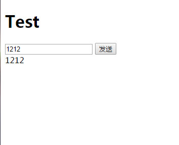
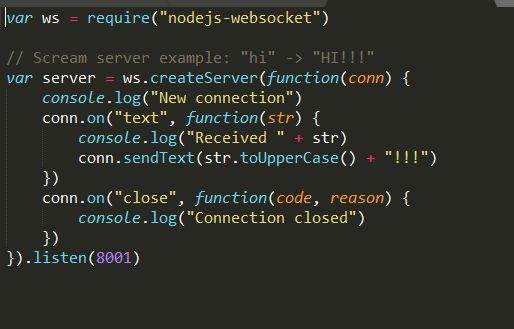
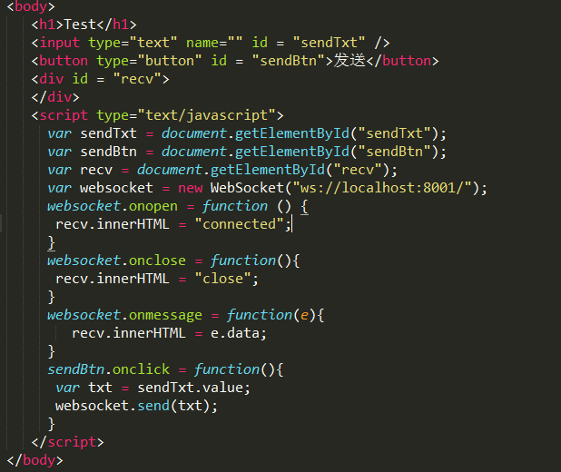
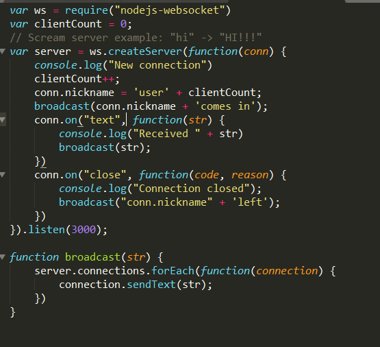
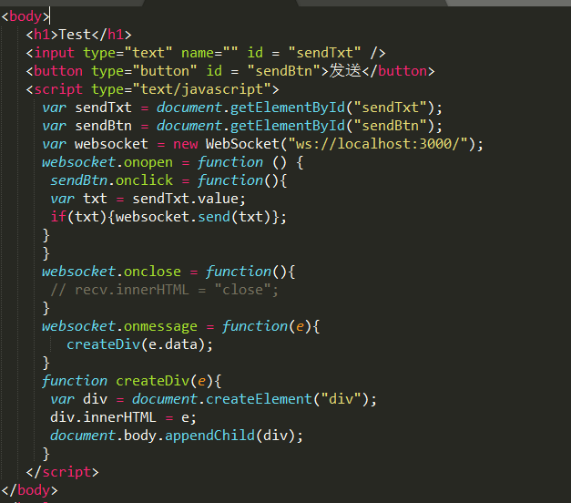
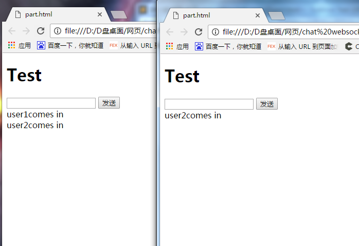
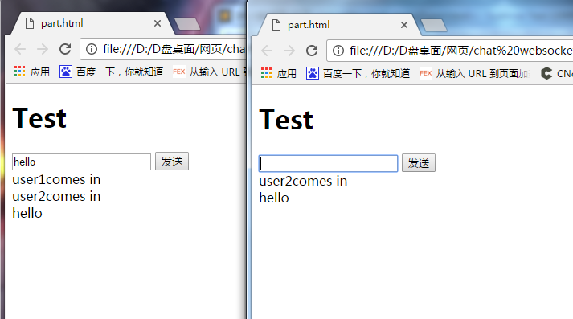

- 发表于2017-11-22
- 分类于工具
伴随着html5的深入学习，笔者有幸学习websocket这门新技术。并利用它完成一个简单的聊天室。在功能搭建前我们先认识一下它--websocket。它和http是有所不同的。我们都知道传统的http请求是由浏览器发起，服务端接受到一个请求后返回一个数据，这样一次来回请求就断了，所以不能用http来写即时通信。而websocket本质是一个TCP连接，它向服务器发送一个websocket请求，当服务器接受到这个websocket请求后，它会在浏览器和服务器之间建立一个socket连接，这个连接允许浏览器和服务器相互发送消息直到一方断开。接下来用代码来演示：
我们新建一个html文件，在里面输入如下图片内容。我们在script里面直接new一个WebSocket(注意大小写)就可以了，里面有一个参数是它的地址。协议是WS，而不是http。当连接建立以后会返回一个回调函数是onopen，相应的连接断开以后会头一个onclose的回调函数。还有一个非常重要的回调函数是onmessage，当我们接收到消息的时候触发的回调函数。

它在浏览器中显示如下：
1.刚打开浏览器

2.输入内容发送后

以上我们用别人的网址完成了一个连接，现在我们自己建立一个服务器来连接。在git-bash工具里输入npm install nodejs-websocket，进行安装。在它的github官网下copy它的server.js如下：

具体为引入一个nodejs-websocket模块，用函数createServer创建一个服务监听8001端口，在连接成功后执行回调函数也就是conn。当接收到消息是会执行text的回调，连接断开时执行close里的回调。
相应的我们把html文件修改为下图所示：

注意websocket参数改为localhost加端口号。
以上小知识熟悉完毕我们开始真正的写即时聊天。
我们把js修改为如下：

var 一个clientCount用于明确连接数让我们每次有新的客户端连接上以后它的名字nickname为“user+clientCount”，然后向所有用户发送一个广播消息函数为broadcast，它将server里的所有连接在connections中遍历，最后发送它的参数str。
html里面修改为如下：

我们在连接上后通过按钮的点击事件获得输入框的内容并把它发送出去。
最后填上最终实现效果图。我们node js文件得到：


由于笔者刚开始接触这个新技术避免不了过于简陋，以后我会填上更加完善的代码。